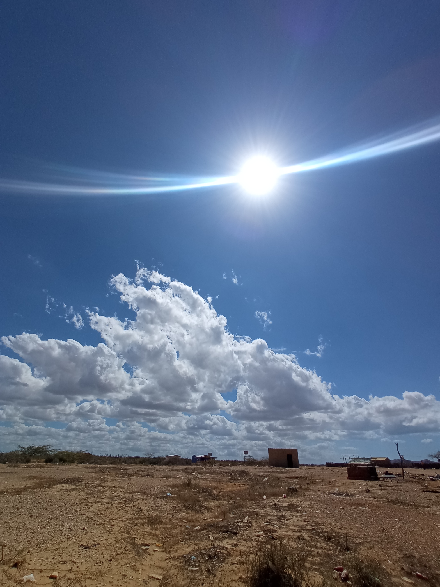

El Primer dia Comienza la aventura Publicado 07-02-2022 Bienvenidos a Uribia capital indigena de Colombia. Monumento wuarlekeru (Araña Tejedora)
Camino a la Alta Guajira Sol Y arena Publicado 07-02-2022 "Pachaca"  A mitad del desierto, camino a tawaira.